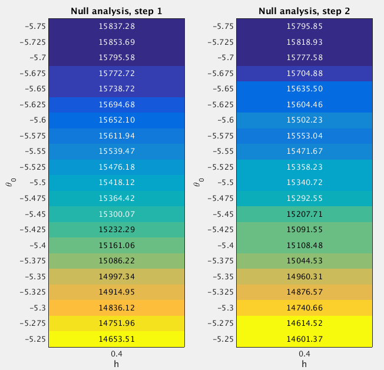

21.2 GSEA Round 2
Last updated: 2017-04-12
Code version: 165dd72eeaecde46dbd09f1ee0d64c1b665f38fb
21.2.1 Fit the null model
From the Round 1 null analysis (Section 21.1), I found that almost 99.9% posterior mass is concentrated on the setting (h=0.4, theta0=-5.5). In Round 2, I used a finer grid. Specifically, I used the grids theta0=(-5.75:0.025:-5.25)' and h=0.4 when fitting the null model. I estimated the (unnormalized) log importance weights (“pseudo-likelihoods”) for all 21 sets of (h,theta0) under null.

After normalizing the log “pseudo-likelihoods” (logw.step*) to posterior probabilities (posp.step*), we can see that almost 100% posterior mass is concentrated on the settings h=0.4 and theta0=(-5.75:0.025:-5.7)'.
theta0.index <- as.character(null.df$theta0) %in% as.character(seq(-5.75,-5.7,by=0.025))
sum(null.df$posp.step2[theta0.index]) ## [1] 121.2.2 Fit the enrichment model
To perform GSEA, I set (h=0.4, theta0=-5.5), since the null analysis suggests that almost 100% posterior mass is placed on these settings. For the log-fold enrichment parameter, I use the grid theta = (0:(5.5/200):5.5)'. The following table lists the GSEA results.